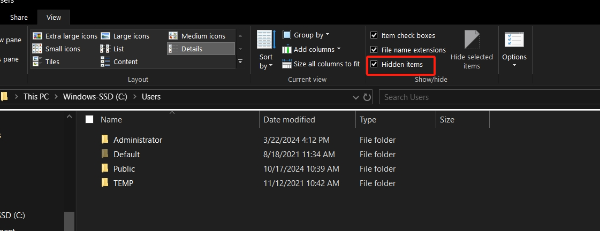
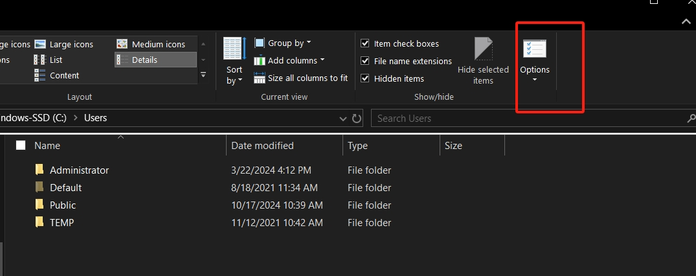
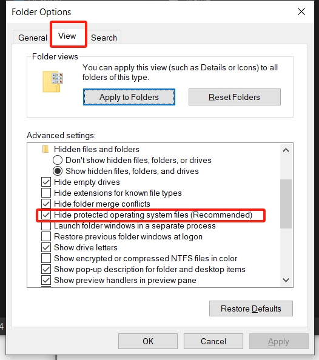
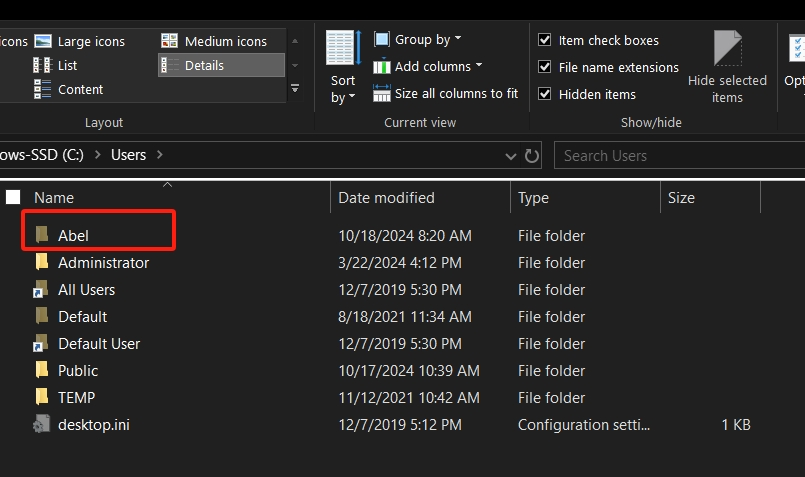
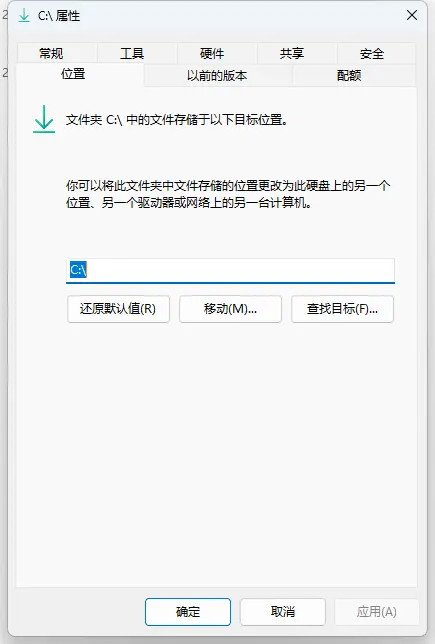
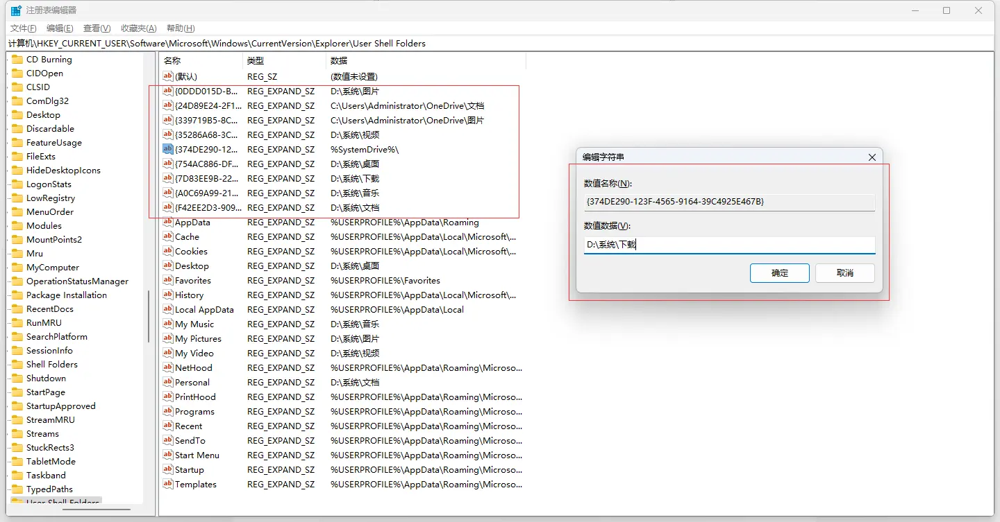

Windows - 疑难问题解答记录
Windows Users用户目录下看不到自己当前用户文件夹[1]
一般来说，在 C:\Users
这个路径下应该有一个当前用户的文件夹，比如在下面的图中应该有一个
Abel
的文件夹，并且查看选项中已经勾选了显示隐藏文件这一个选项：

在查看菜单最右边有一个选项，单击打开“文件夹选项”，选中“查看”一栏，在高级设置里取消勾选“隐藏受操作系统保护的文件”，应用后就能看到自己的用户文件夹，最后选择确定。



提示：找到你想要的文件做好修改之后最后还是把这些文件隐藏显示会安全一点。
重定向桌面路径和下载路径时不小心将下载路径和桌面路径合并了[2][3]
在系统C盘存储不够时，我们常常会把系统自带的文件路径移动到除C盘以外的其他盘去，但是一不小心就将文件移动到其他盘的根路径去了，这时候再通过简单的更换路径是更换不了的，系统这些自带的桌面、下载、图片、文档、音乐、视频本身就是一个文件夹，只是windows系统将他们单独拿出来方便大家使用。
这里是将下载的路径移动到C盘根路径去了，再次通过右键->属性->位置移动到其他路径各种报错。

我们本身已经将下载位置移动到C盘根路径了，再次右键打开的属性已经是C盘磁盘分区的属性了，修改磁盘分区的路径本身就是一种错误的操作，解决思路是通过修改注册表直接修改下载的文件存储位置。
- 按
Win + R调出命令行运行窗口，输入regedit并按回车。 - 在弹出的注册表窗口里，打开下面路径
计算机\HKEY_CURRENT_USER\SOFTWARE\Microsoft\Windows\CurrentVersion\Explorer\User Shell Folders，直接将路径复制上去打开也可以。 - 找到下载对应的ID串需要修改的项，修改对应值为你要设置的路径位置。
具体ID对应的名称如下：
1 | |

最后重启电脑即可。
References
Windows - 疑难问题解答记录
https://chen-huaneng.github.io/2024/10/18/2024-10-18-2024-10-18-windows/